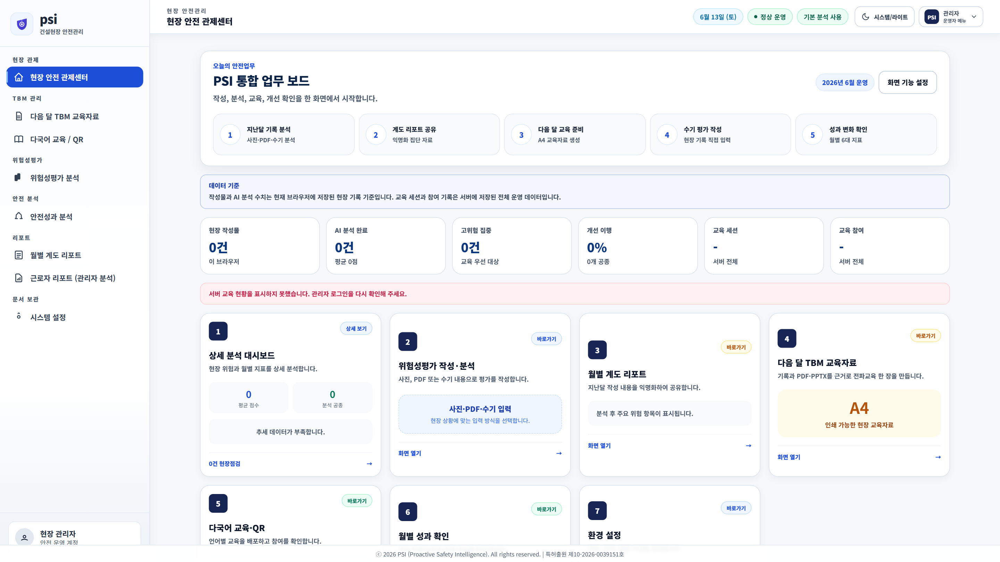
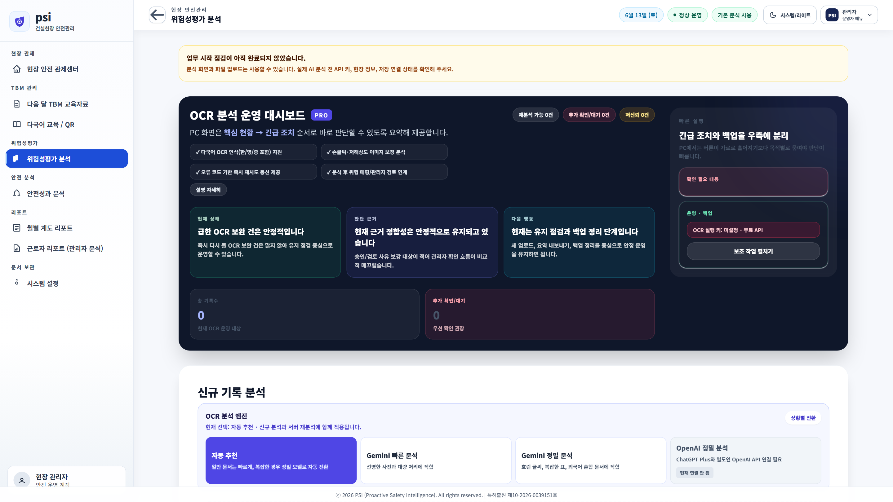
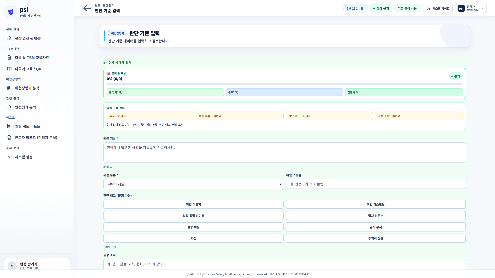
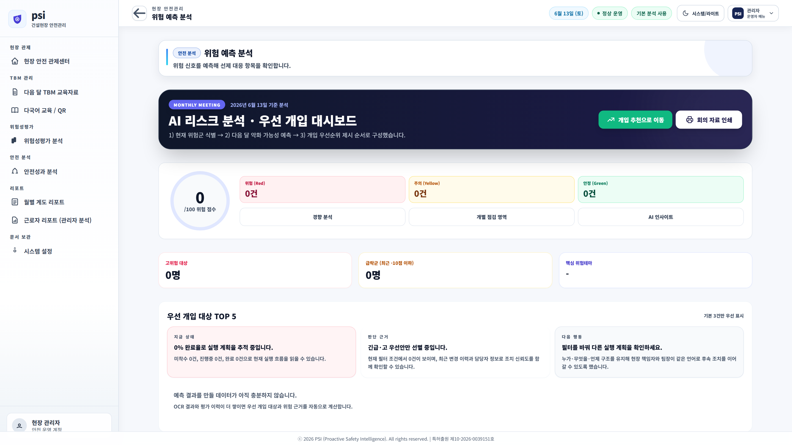
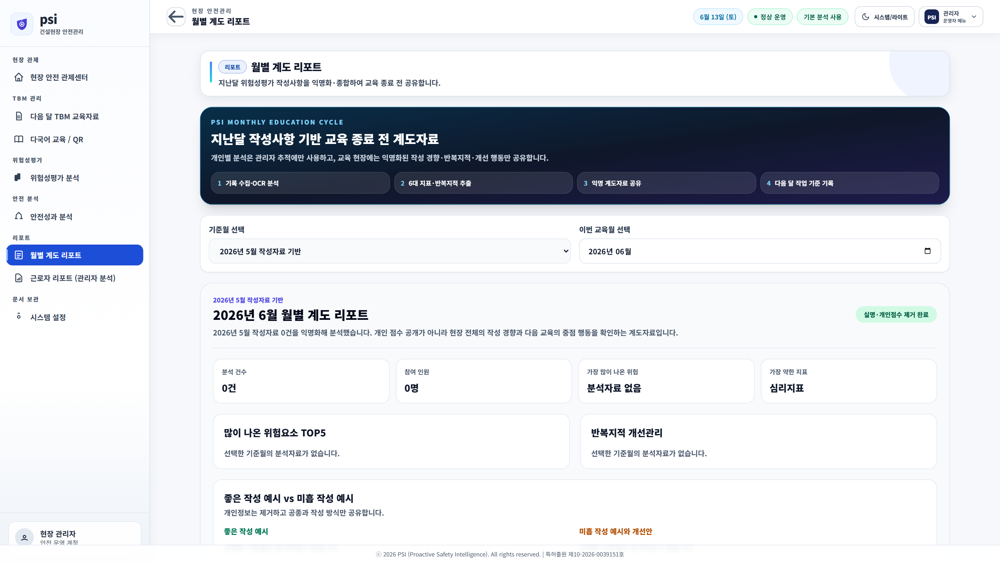
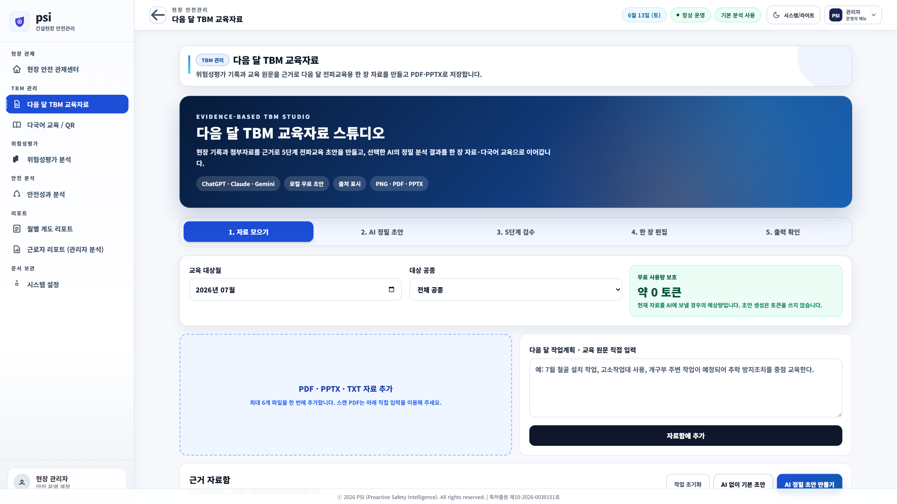
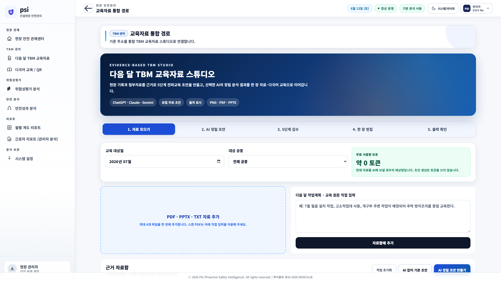

현재 건설 현장의 위험성평가는 작성 및 서명 위주로 흘러가, 근로자의 능동적 인식 제고와 정량화에 한계를 보입니다.
위험성평가에 대규모 AI OCR 기법과 자연어 처리를 결합하여 "근로자 응답 표준화" 및 "6대 지표 계량화"를 이룩하고, 이를 징계용이 아닌 "현장 맞춤형 교육자료로 환류"하여 자율 안전 문화를 조성합니다.
종이로 기록되던 아날로그 정보가 모바일 촬영과 AI 분석을 통해 현장의 정량적 디지털 안전 자산으로 바뀝니다.
근로자가 작업 전 직접 자필로 작성하는 핵심 항목입니다. AI는 이 답변들의 논리적 정합성을 대조하여 신뢰도를 측정합니다.
모바일 또는 사무실 스캐너로 수집된 종이 위험성평가지를 자동 이미지 분할 및 하이브리드 OCR 기술로 고속 디지털화하여 관리 서버에 적재합니다.
비정형 근로자 서술형 답변을 LLM(거대언어모델) 엔진을 통해 5대 안전 항목으로 매핑하고, 논리적 맥락 충돌 여부를 감지해 신뢰도를 판별합니다.
위험 인식도, 공종 이해도, 위험성평가 이해도, 작업 숙련도, 개선이행성, 반복지적 감점을 계량 연산하여 근로자의 안전 인식을 과학적으로 수치화합니다.
현장 전체의 월간 안전 경향, 공종별 취약 분야, 반복 지적 빈도 등을 분석하여 안전관리자 검토용 종합 의사결정 보고서를 자동 발행합니다.
외국인 근로자가 작성한 고위험 취약 분야를 기반으로 국가별(베트남, 태국, 미얀마 등) 번역이 적용된 아침 TBM용 안전교육 한 장 교재를 생성합니다.
현장의 취약 부적합 사항이 교육 전파 및 원격 피드백을 통해 실제 안전 행동의 질적 변화로 이어졌는지 월간 연속선상에서 추적 관리합니다.

관리자가 현장의 일일 위험성평가 입력 분포와 정량화된 안전 수준 추이를 직관적으로 관제할 수 있습니다.
근로자가 현장에서 손으로 쓴 다국어 위험성평가지의 아날로그 종이 필기 데이터를 고유의 OCR 모듈로 추출하여 보관합니다.






AI는 보조자이자 도구일 뿐, 현장의 최종 결정과 안전 가치 판단은 전문 인간 안전관리자가 총괄합니다.
안전 관리는 현장의 즉각적인 소통과 신뢰에 기반합니다. AI의 가차없는 오판율을 최소화하기 위해, 현장 안전관리자의 직관과 검토가 개입하는 구조적 보정 단계를 표준 설계하였습니다.
• 데이터 아카이빙 시 AWS KMS 기반 암호화 적재
• 모바일 Kiosk 서명 시 수집 항목 비식별 전처리 자동 통제
• 대외 유출 불가한 폐쇄망 및 Sandbox형 테스팅 호환 설계
대우건설 현장 1개소(근로자 100~300명 규모)를 시범 선정하여 고유 프로세스의 현장 정착력과 효과를 실증합니다.
| 구분 | 평가 지표 (KPI) | 목표 수준 |
|---|---|---|
| 정확도 | 한글 필기체 OCR 인식률 및 5문항 분류 정합도 | 90% 이상 |
| 업무시간 | 안전관리자 수기 데이터 분석 및 정리 소요 시간 | 30% 이상 절감 |
| 교육환류 | 다국어 TBM 교재 원클릭 생성 및 TBM 배포 시간 | 90% 단축 |
| 전파율 | 외국인 근로자의 모국어 교육 확인 및 서명 제출률 | 95% 이상 |
| 행동 개선 | 전월 안전계도 이후 동일 지적사항 재발률 감소 | 20% 이상 감소 |
NEW-PSI는 법적 보호를 받는 차별화된 건설 안전 AI 독점 기술입니다.